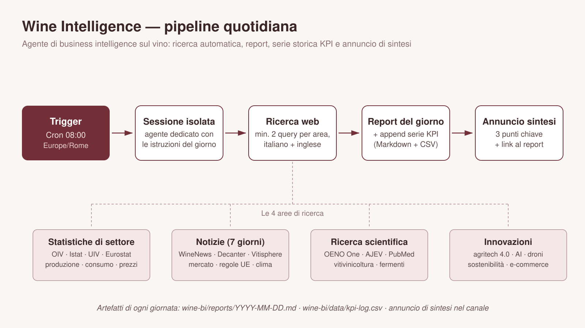

Report più recente
Rotazione geografica di oggi: Spagna (giorno del mese 16 mod 10 → indice 6), seconda area approfondita in base all'attualità: USA/California (vendemmia più precoce di una generazione, report Ciatti di settembre). Già trattati nei giorni scorsi e quindi non ripetuti: dazi UE-USA al 15% (9-14/9), giacenze Italia 42,6 mhl (9/9), National Vintage Report Australia (15/9), export australiani al minimo da 22 anni (15/9), arresto contraffazione UK e studi OENO One/UC Davis/JWE (15/9).
Sintesi esecutiva
- Spagna: export a minimo decennale nel primo semestre 2026 — volumi -20,2% (il livello più basso da dieci anni), valore -10,2%; i prezzi record ammortizzano solo in parte la caduta.
- Vendemmia spagnola senza stime ufficiali, ma molto precoce — Castilla-La Mancha rompe la tradizione e non pubblica il pronostico per prudenza meteo; le stime non ufficiali parlano di ~31,5 mhl (contro 33,1 del 2025, dato non confermato). Rioja chiude una "vendemmia centenaria" di qualità eccezionale (225,5 mln kg) e Rías Baixas fa il proprio record (49 mln kg).
- Crisi Cava: prezzi dell'uva sotto i costi di produzione — i produttori pagano fino a 25 cent/kg contro costi stimati 53-56 cent/kg, con ~4.000 tonnellate di uva potenzialmente invenduta.
- California: vendemmia la più precoce "di una generazione" — secondo Ciatti potrebbe essere completa all'80% entro fine settembre; rese più leggere spingono alcuni acquirenti a cercare uva sul mercato.
- Ricerca del giorno — machine learning multi-temporale per la previsione della resa a Cádiz, strategie biologiche contro la peronospora e modello AI di vendemmia in Rioja con accuratezza del 96%.
Statistiche & dati
| Indicatore | Valore | Variazione / Nota | Fonte |
|---|---|---|---|
| Export vino Spagna H1 2026 (volume) | -20,2% | minimo decennale | Wine Intelligence |
| Export vino Spagna H1 2026 (valore) | -10,2% | prezzi record contengono la perdita | Wine Intelligence |
| Vendemmia Rioja 2026 (uva raccolmata) | 225,5 mln kg | 191,7 mln rossi + 33,8 mln bianchi; qualità "eccezionale" | Riojawine |
| Vendemmia Rías Baixas 2026 | 49 mln kg | record storico della DO | Vinetur |
| Stima vendemmia Spagna 2026 | ~31,5 mhl | dato non confermato (stime non ufficiali) vs 33,1 mhl 2025 | The Silent Luxury |
| Export vino italiano in Canada H1 2026 | 208,6 mln € | +1,1% (dati doganali canadesi, Oive) | WineNews |
| Prezzo uva Cava 2026 (minimo) | 0,25 €/kg | sotto i costi di produzione (0,53-0,56 €/kg) | Wine-Searcher |
Notizie
- Spagna (area approfondita): export a minimo decennale — nel primo semestre 2026 le esportazioni di vino scendono del 20,2% a volume e del 10,2% a valore; i prezzi medi record (spinta del vino sfuso cara e della domanda di qualità) contengono la perdita di valore. (Wine Intelligence, Vinetur)
- Spagna: la vendemmia 2026 che non vuole stime — Castilla-La Mancha, la prima regione del Paese, rinuncia per la prima volta al pronostico anticipato per prudenza meteo ("alte temperature... optiamo per la prudenza"); la raccolta è comunque partita presto e veloce, con rese più basse ma alta qualità. Rioja chiude la "vendemmia centenaria" con qualità eccezionale e Rías Baixas tocca il proprio record (49 mln kg). (WineNews, Vinetur, Riojawine, Tridge)
- Cava: i produttori di uva in modalità crisi — il crollo dei prezzi pagati ai viticoltori (fino a 25 cent/kg, sotto i 53-56 cent di costo) e ~4.000 tonnellate di uva potenzialmente invenduta riaccendono il dibattito sulla sostenibilità economica della DO. (Wine-Searcher, Meininger's)
- USA (seconda area): California, vendemmia lampo — per Ciatti il raccolto 2026 sarà il più precoce di una generazione, con l'80% dell'uva potenzialmente vendemmiate entro fine settembre; rese più leggere hanno spinto alcuni acquirenti a cercare uva sul mercato a pochi mesi dalla fine. (Vinetur, Ciatti California Report)
- Italia: export in Canada resistente — nel primo semestre 2026 il vino italiano in Canada vale 208,6 mln € (+1,1%), segnale di tenuta su un mercato terzo nonostante il quadro mondiale fragile. (WineNews)
- Annata estrema in Alto Adige, Montello e Valpolicella — le cantine gestiscono raccolto anticipato e rese irregolari "con esperienza e scelte" in uno degli anni climaticamente più difficili degli ultimi tempi. (VinoNews24)
Ricerca & Innovazione
- Precision Agriculture: ML multi-temporale per la resa a Cádiz — Cubillas et al. (2026) costruiscono un framework predittivo della produzione per pianta in provincia di Cádiz (Spagna) combinando immagini multi-temporali e dati agronomici: un passo concreto verso la previsione di resa operativa in un anno in cui le stime ufficiali sono mancate. (Springer)
- Peronospora: strategie biologiche a confronto — Palmieri et al. (2026, *Agriculture*) sistematizzano le strategie di controllo biologico di *Plasmopara viticola*, il patogeno più impegnativo dei vigneti mondiali, nel quadro della riduzione dei fungicidi di sintesi. (MDPI)
- Rioja: il modello AI della vendemmia al 96% — il modello predittivo basato su intelligenza artificiale della DOCa Rioja ha raggiunto il 96% di accuratezza nei vigneti con dati di campo dettagliati: la previsione di vendemmia diventa uno strumento di pianificazione in cantina. (Vinetur)
- California: scambio ionico per correggere il pH — un nuovo studio californiano mostra che lo scambio ionico produce la maggiore riduzione di pH nei rossi; la fermentazione malolattica bloccata, in alternativa, lascia 19% più tannini e 5% più polifenoli totali. (Vinetur)
- Mercato: precision viticulture a 6,82 mld $ — il mercato globale della viticoltura di precisione vale 6,82 mld $ nel 2026 e dovrebbe arrivare a 12,23 mld $ entro il 2034 (CAGR ~7,6%): sensori, droni e AI restano il segmento in più rapida crescita dell'agritech del vino. (Fortune Business Insights)
Conoscenza enologica del giorno
Albariño: la viticoltura atlantica che non teme il freddo
L'Albariño è il vitigno bianco-simbolo della Galizia, coltivato soprattutto nella DO Rías Baixas, una delle zone viticole più atlantiche d'Europa: latitudine simile al Piemonte ma clima oceanico, con estati tiepide, umidità elevata e piogge che in altri contesti sarebbero ostili alla vite. Il suo segreto è l'adattamento: vegetazione vigorosa e fogliami espansi che massimizzano l'intercettazione della luce in condizioni di nebulosità frequente; peronospira permettendo (l'umidità è il suo principale rischio fitosanitario), il vitigno matura bene grazie a un lungo periodo di accumulo. Le rese sono naturalmente contenute — grappoli piccoli e spargolati — e questo contribuisce alla concentrazione aromatica: agrumi maturi, pesca bianca, fiori bianchi e una salinità amarognola che deriva anche dai suoli granitici-sabbiosi della zona. Il legame con l'attualità è doppio: Rías Baixas ha appena firmato il proprio record di vendemmia (49 mln kg), e nel mercato globale del bianco fresco l'Albariño è tra i pochi vitigni in crescita costante nei mercati anglosassoni, con prezzi medio-alti che contrastano la compressione della fascia entry-level. Una lezione di specializzazione: dove il clima rende difficile fare "vino da tutti", fare vino irripetibile.
Fonti
- Wine Intelligence — Spain's wine exports fall sharply in H1 2026, but rising prices cushion the blow
- Vinetur — Spain's wine-sector export volume hit a decade low in H1 2026
- WineNews — Anche in Spagna niente stime sulla vendemmia 2026
- Vinetur — Spain's biggest wine region drops its 2026 harvest forecast
- Riojawine — Rioja is wrapping up its "centennial" harvest, marked by exceptional quality
- Vinetur — Rías Baixas infrange il record di vendemmia con 49 milioni di chili
- Tridge — Early and rapid 2026 grape harvest in La Mancha
- Wine-Searcher — Cava Growers Enter Crisis Mode
- Meininger's — Cava Slides into Crisis
- Vinetur — California's 2026 winegrape harvest could be 80% complete by end of September
- Ciatti — California Report, agosto 2026
- WineNews — Mondo: export vino italiano in Canada H1 2026
- VinoNews24 — Vendemmia 2026 in Alto Adige, Montello e Valpolicella
- The Silent Luxury — European Wine Harvest 2026
- Springer Precision Agriculture — Multi-temporal machine learning for grapevine yield prediction in Cádiz (Cubillas et al. 2026)
- MDPI Agriculture — Biological Strategies to Control Grapevine Downy Mildew (Palmieri et al. 2026)
- Vinetur — California Study Finds Ion Exchange Delivers the Biggest pH Drop in Red Wine
- Fortune Business Insights — Precision Viticulture Market
- OIV — State of the World Wine Sector in 2025
- italia-informa — Vendemmia 2026 anticipa per il caldo (Portogallo IVV 6,7 mhl +12%)
Indicatori chiave
| Data | Indicatore | Valore | Unità | Fonte |
|---|---|---|---|---|
| 16 settembre 2026 | export vino italiano canada H1 2026 | 208.6 | mln_eur | winenews.it |
| 16 settembre 2026 | export vino spagna H1 2026 valore yoy | -10.2 | % | wine-intelligence.com |
| 16 settembre 2026 | export vino spagna H1 2026 volume yoy | -20.2 | % | wine-intelligence.com |
| 16 settembre 2026 | mercato precision viticulture 2026 | 6.82 | mld_usd | fortunebusinessinsights.com |
| 16 settembre 2026 | prezzo uva cava 2026 minimo | 0.25 | eur_kg | wine-searcher.com |
| 16 settembre 2026 | stima vendemmia spagna 2026 | 31.5 | mhl | the-silent-luxury.com |
| 16 settembre 2026 | vendemmia rias baixas 2026 | 49 | mln_kg | vinetur.com |
| 16 settembre 2026 | vendemmia rioja 2026 uva raccolta | 225.5 | mln_kg | riojawine.com |
| 15 settembre 2026 | crush uva vino australia 2026 | 1.27 | mln_ton | wineaustralia.com |
| 15 settembre 2026 | crush uva vino australia 2026 yoy | -19 | % | wineaustralia.com |
| 15 settembre 2026 | danno dazi usa15 vino italiano | 317 | mln_eur | unioneitalianavini.it |
| 15 settembre 2026 | export vino australia giu2026 | 2.30 | mld_aud | wineaustralia.com |
| 15 settembre 2026 | export vino australia giu2026 yoy | -7 | % | wineaustralia.com |
| 15 settembre 2026 | export vino australia volume giu2026 | 598 | mln_l | thedrinksbusiness.com |
| 15 settembre 2026 | valore vendemmia australia 2026 | 837 | mln_aud | wineaustralia.com |
| 15 settembre 2026 | valore vendemmia australia 2026 yoy | -26 | % | wineaustralia.com |
| 14 settembre 2026 | champagne produzione 2026 vs 2025 | -49 | % | reuters.com |
| 14 settembre 2026 | export mondiale vino 2025 | 94.8 | mhl | reuters.com |
| 14 settembre 2026 | export mondiale vino 2025 yoy | -4.7 | % | reuters.com |
| 14 settembre 2026 | export vino italiano 5m 2026 | sotto_3 | mld_eur | gamberorosso.it |
| 14 settembre 2026 | mercato precision viticulture 2026 | 6.82 | mld_usd | fortunebusinessinsights.com |
| 14 settembre 2026 | produzione francia 2026 stima | 33.9 | mhl | theguardian.com |
| 13 settembre 2026 | champagne produzione 2026 vs 2025 | -49 | % | reuters.com |
| 13 settembre 2026 | consumo mondiale vino 2025 | 208 | mhl | oiv.int |
| 13 settembre 2026 | export vino italiano T1 2026 | 2.34 | mld_eur | unioneitalianavini.it |
| 13 settembre 2026 | export vino italiano T1 2026 yoy | -6.8 | % | unioneitalianavini.it |
| 13 settembre 2026 | export vino italiano usa T1 2026 yoy | -15.4 | % | liberacr.it |
| 13 settembre 2026 | produzione francia 2026 stima | 33.9 | mhl | theguardian.com |
| 12 settembre 2026 | champagne resa commerciale 2026 | 8800 | kg_ha | winecap.com |
| 12 settembre 2026 | export vino italiano S1 2026 usa valore yoy | -14.1 | % | askanews.it |
| 12 settembre 2026 | export vino italiano S1 2026 valore yoy | -6.2 | % | vinonews24.it |
| 12 settembre 2026 | export vino italiano S1 2026 volume yoy | -4 | % | vinonews24.it |
| 12 settembre 2026 | import vino cina 2025 | 1.4 | mld_usd | fas.usda.gov |
| 12 settembre 2026 | produzione vino regno unito 2025 | 124377 | hl | thedrinksbusiness.com |
| 11 settembre 2026 | consumi vino usa T1 2026 volume yoy | -8.3 | % | winenews.it |
| 11 settembre 2026 | crush uve california 2025 | 2.6 | mln_ton | farmprogress.com |
| 11 settembre 2026 | gdo vino spumante italia T2 2026 yoy | -2 | % | inumeridelvino.it |
| 11 settembre 2026 | iwc2026 medaglie francia | 849 | medaglie | vinetur.com |
| 11 settembre 2026 | spesa consumer vino usa 2025 | 115 | mld_usd | winebusiness.com |
| 11 settembre 2026 | vigneti estirpati california 2025 | 38 | mila_acri | nytimes.com |
| 11 settembre 2026 | volume mercato vino usa 2025 yoy | -4 | % | bmo_via_winebusiness.com |
| 10 settembre 2026 | grant napa green sostenibilita 2026 | 3 | mln_usd | wineindustryadvisor.com |
| 10 settembre 2026 | import mondiale vino T1 2026 valore | 7.4 | mld_eur | winenews.it |
| 10 settembre 2026 | livex valore scambi gen2026 vs dic2025 | 21.7 | % | vin-x.com |
| 10 settembre 2026 | stima produzione vino castilla la mancha 2026 27 | 19 | mhl | democrata.es |
| 10 settembre 2026 | variazione import mondiale vino T1 2026 yoy | -7.5 | % | winenews.it |
| 9 settembre 2026 | consumo mondiale vino 2025 | 208 | mhl | oiv.int |
| 9 settembre 2026 | export vino italiano extraUE gen-apr2026 yoy | -8.5 | % | unioneitalianavini.it |
| 9 settembre 2026 | export vino italiano gen-feb2026 yoy | -13.3 | % | winemeridian.com |
| 9 settembre 2026 | giacenze vino italia 31luglio2026 | 42.6 | mhl | agronotizie.imagelinenetwork.com |
| 9 settembre 2026 | produzione mondiale vino 2025 | 227 | mhl | oiv.int |
| 9 settembre 2026 | stima produzione francia 2026 | 33.9 | mhl | thegrapereset.com |
| 9 settembre 2026 | variazione giacenze vino italia yoy | 6.9 | % | vinetur.com |
Archivio report
- Spagna: export a minimo decennale nel primo semestre 2026 — volumi -20,2% (il livello più basso da dieci anni), valore -10,2%; i prezzi record ammortizzano solo in parte la caduta.
- Vendemmia spagnola senza stime ufficiali, ma molto precoce — Castilla-La Mancha rompe la tradizione e non pubblica il pronostico per prudenza meteo; le stime non ufficiali parlano di ~31,5 mhl (contro 33,1 del 2025, dato non confermato). Rioja chiude una "vendemmia centenaria" di qualità eccezionale (225,5 mln kg) e Rías Baixas fa il proprio record (49 mln kg).
- Crisi Cava: prezzi dell'uva sotto i costi di produzione — i produttori pagano fino a 25 cent/kg contro costi stimati 53-56 cent/kg, con ~4.000 tonnellate di uva potenzialmente invenduta.
- Australia: vendemmia 2026 al minimo da 25 anni — il *National Vintage Report 2026* di Wine Australia stima un crush di 1,27 milioni di tonnellate (-19%), il più piccolo dal 2000, con valore della vendemmia a 837 mln di A$ (-26%). Il raccolto ridotto non ha però riequilibrato il mercato.
- Export australiani ai minimi da 22 anni — nell'anno a giugno 2026 l'export vale 2,30 mld di A$ (-7%) e 598 mln di litri (-6%), il volume più basso dal 2004; la Cina resta primo mercato a valore ma cede il 15%.
- Italia: vendemmia tra le più precoci di sempre, tra siccità e giacenze record — il caldo anticipa la raccolta e la siccità riduce le rese, ma le scorte (42,6 mhl) continuano a pesare sui prezzi.
- Il commercio mondiale del vino ai minimi dal 2009: export globali 2025 a 94,8 mhl (-4,7% in volume) con i dazi USA e il calo dei consumi come freni principali (Reuters su dati OIV).
- Francia: raccolto tra i più piccoli in 30 anni — stima ~33,9 mhl (-6% sul 2025); in Champagne la produzione attesa cede del -49% sul 2025 e -47% sulla media cinqueennale.
- Export italiano ancora sotto pressione: primi cinque mesi 2026 sotto i 3 mld € (Istat via Gambero Rosso), con gli spumanti in crescita ma il Prosecco in freno; gli USA ridisegnano consumi e canali distributivi.
- Francia verso uno dei raccolti più piccoli in 30 anni: stima ~33,9 mhl (-6% sul 2025, -17% sulla media 5 anni) dopo ondate di calore e siccità; in Champagne la produzione attesa cede del -49% sul 2025 e -47% sulla media cinqueennale (Reuters).
- Export vino italiano: primo quadrimestre 2026 a -6,8% per 2,34 mld € (Osservatorio UIV); verso gli Stati Uniti il calo tocca il -15,4%, mentre il mercato UE-USA resta in trattativa per l'esenzione dai dazi del 15%.
- Italia: il paradosso della vendemmia 2026 — la siccità taglia i raccolti ma le giacenze record continuano a pesare sui prezzi (Il Sole 24 Ore); la settimana 7-11 settembre segna una fase di selezione con nuove operazioni M&A (TenuteAgricole24).
- Export vino italiano: primo semestre 2026 a -6,2% — oltre 3,6 miliardi di € con volumi a -4% e prezzo medio in flessione del 2%; gli USA cedono del -14,1%, mentre Cina e Brasile crescono (dati Osservatorio UIV su base Istat, diffusi l'11/9).
- Champagne: la resa commerciale 2026 più bassa dal periodo pandemico — il CIVC ha fissato a 8.800 kg/ha la resa autorizzata (~250 mln di bottiglie), ma la regione attende una qualità "eccezionale" dell'annata precoce.
- Regno Unito (area approfondita di oggi) — vendemmia 2026 tra le più precoci di sempre e WineGB "ottimista" su qualità e quantità dopo l'estate-canicola; sullo sfondo il 2025 record con 124.377 hl (+55% su 2024).
- L'Europa vendemmia prima che mai — Champagne, Bordeaux e Borgogna puntano alle date di raccolta più precoci di sempre e Germania non partiva mai così presto (seconda settimana di agosto, secondo l'istituto tedesco del vino DWI); anche Italia e Spagna segnalano forte anticipazione. Uve sane e qualità promettente, ma rese sotto media: in Baden alcuni stimano fino a -30% di quantità.
- USA in "reset" strutturale (area approfondita di oggi) — la spesa dei consumatori supera i 115 miliardi di $ nel 2025 (+3%), ma il volume di mercato cede il 4% (BMO); i consumi del T1 2026 scendono -8,3% in volume; la crush californiana 2025 è stata la più piccola da decenni (2,6 mln t, -8,4%) e nel 2025 sono stati estirpati ~38.000 acri di vigneto (~7% del totale statale).
- La distribuzione USA si ridisegna: RNDC in Chapter 11 — dopo la cessione di 11 mercati a Reyes Beverage Group (>1 miliardo di $, chiusa il 29 maggio), il secondo distributore americano di vino e spirits ha avviato il Chapter 11 (26 luglio) cercando acquirenti per i mercati rimanenti.
- Italia: confermata la sospensione delle stime vendemmiali di settembre — UIV, Assoenologi e Ismea non pubblicheranno i consueti dati previsionali: la campagna si chiuderà solo con i dati consuntivi, un precedente che lascia il mercato senza un riferimento ufficiale sui volumi 2026.
- Chianti DOCG vola in Giappone e Cina — dal 14 al 20 settembre il Consorzio porta degustazioni ed eventi in 15 ristoranti tra Tokyo e beyond; mentre a Greve in Chianti si apre oggi l'Expo Chianti Classico (10–13 settembre). Punta strategica sui mercati asiatici in un anno di export in difficoltà.
- Castilla-La Mancha: vendemmia 2026/27 stimata intorno ai 19 mhl — l'osservatorio regionale OIVCLM conferma volumi simili alla campagna precedente, dopo il ritiro delle previsioni di agosto per il meteo volatile.
- Vendemmia 2026 la più precoce di sempre in Europa: caldo e siccità accelerano la maturazione di circa due settimane in Spagna, Francia e Italia; in Champagne si parla di raccolto "straordinariamente" anticipato.
- Francia verso uno dei raccolti più piccoli in 30 anni: il Ministero dell'Agricoltura stima 33,9 mhl (-6%), dopo ondate di calore estive.
- Italia: si parte con le cantine piene — giacenze a fine luglio a 42,6 mhl (+6,9% su un anno) che frenano i prezzi delle uve, mentre più regioni (Toscana, Piemonte, Veneto, Marche, Abruzzo) applicano tagli di resa per siccità; UIV, Assoenologi e Ismea presenteranno i dati di vendemmia solo a campagna conclusa.
Come funziona
Ogni mattina alle 08:00 un agente autonomo esegue ricerche web in italiano e inglese su quattro aree tematiche, scrive il report del giorno, aggiunge gli indicatori quantitativi alla serie storica e rigenera questa pagina.
- Statistiche di settore — produzione, consumo, scambi, prezzi (OIV, Istat, UIV, Eurostat)
- Notizie — aziende, mercato, regolamentazione UE, dazi, clima (ultimi 7 giorni)
- Ricerca scientifica — viticoltura ed enologia (OENO One, AJEV, PubMed, Nature)
- Innovazioni — agritech 4.0, AI, droni e sensori, sostenibilità
Ogni dato riportato rimanda alla fonte originale: se un dato non è verificabile viene marcato come "dato non confermato".
